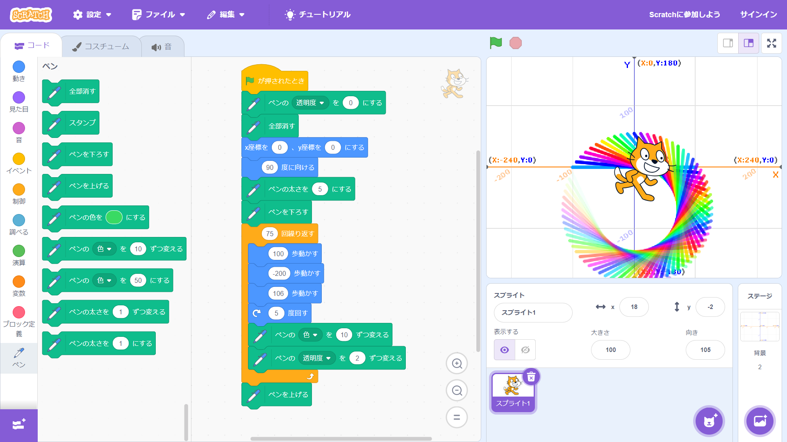
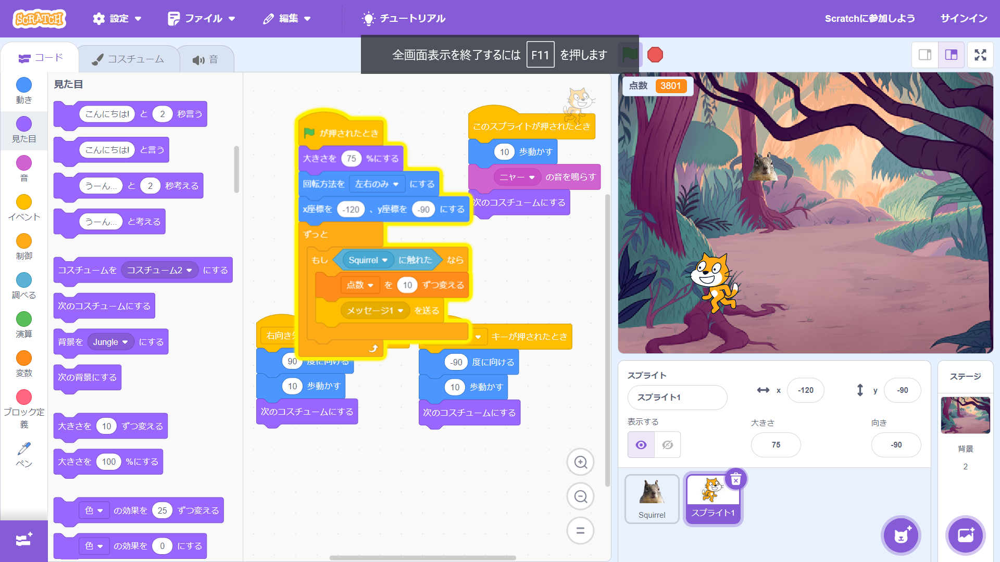

1週目のレポート ： 公大高専１年実習I-1
1班1番 足立和鴻
第1週目
1-1 サイエンスアート

1.内容
スクラッチを使って線を書くプログラムを作り、それにより上のような図形を作った。このプログラムはねこの
移動した場所をなぞる性質を持ったペン機能を利用している。この図形は、まず、ペンの透明度と前書いた線、
ねこの位置と角度をリセットする。その後、ペンの太さを設定して、ペンを下す。次にねこを１００歩、ー２００歩
、１０６歩の順で動かし、ペンの色を１０，透明度を２ずつ変えるプログラムを７５回繰り返す。最後にペンを上
げて、この図形が出来上がる。 2.感想
規則正しい動きをすると案外適当でもきれいな図形ができるものだと思った。しかしこのプログラムはねこが動ける
範囲が枠組みの中のみなので適当に移動範囲などを変えすぎると不規則な形になってしまう。
今回はペンを動かすプログラムをすべて同じ回数にしたが一つ一つの動きの回数を変えたらもっとおもしろい
図形ができるのではないかとおもった。
1-2 ゲーム

1.内容
これはスクラッチを使って落ちてくるアイテムをねこをｘ軸方向に操作して受け取るゲームのプログラムである。
このプログラムはまず、ねこを画面中央より少し下の座標にセットする。その後右向きキーをを押したらねこを右向き
にし、１０歩動かす、左キーでも同様に左方向のプログラムが作動する。また動きがあるように見せるため猫の
コスチュームが一度動くたびに代わるようになっている。
また、アイテムのプログラムは、ｙ軸は固定してあるが、ｘ軸はー２００から２００までの乱数で出現場所が決まる。
出現後、ｙ軸が固定されてい、ｘ軸は乱数で設定された地点に１か２のスピードで移動する。ねこがこれに触れたとき
アイテムは隠れ、点数を１０上げる。
2.感想
思ったよりもちゃんとしたゲームになった。しかし、これはスクラッチという事前に簡略化されたもので作ったから簡単
だっただけであって、本当ならもっと複雑なプログラムを組まなくてはいけないから、今回はあくまでプログラミングの
感覚をつかむための授業なんだと感じた。
1-3 ホームページ作成
私のホームページ
1.内容
Githubというアプリを使って、自分のホームページを作った。ホームページの内容はGithub内のindex.htmlから変更
できる。
2.感想
スクラッチと違う本物のプログラムを見たが複雑すぎて何がどうなっているのかよくわからなかったし、これだけの量で
６行程度のホームページにしかならないのがプログラマーの仕事がいかに難しいか少しわかったような気がする。